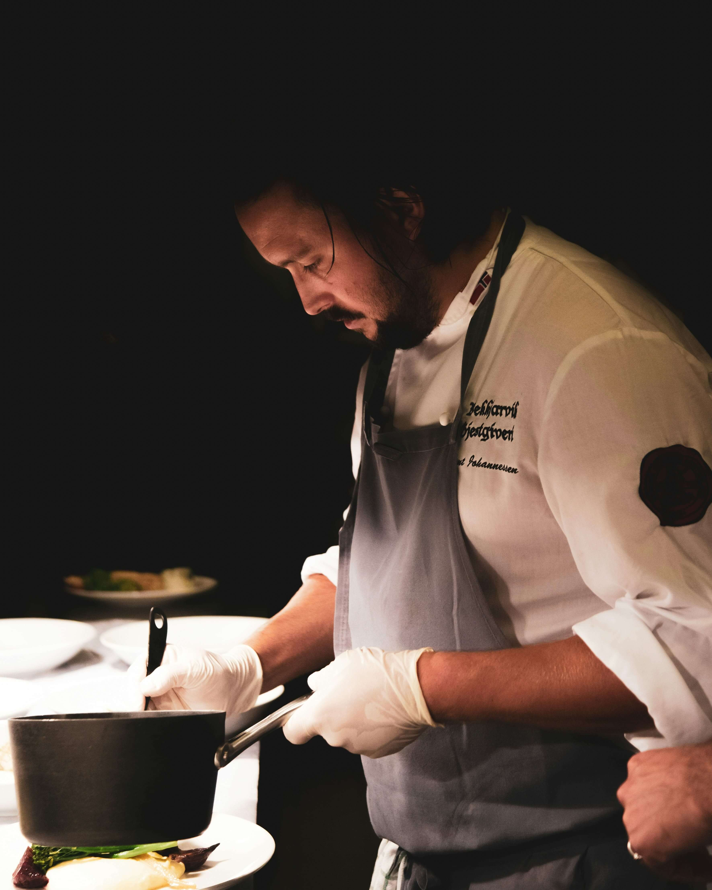

O nás
Restaurace Chomik a Labuť nabízí unikátní kombinaci tradičních českých a mezinárodních pokrmů. Naše suroviny jsou čerstvé a lokální, připravované s láskou a péčí. Přijďte si užít příjemnou atmosféru, skvělé jídlo a přátelský servis.
Náš tým kuchařů neustále vymýšlí nové sezónní menu a pořádá tematické večery pro všechny milovníky dobrého jídla. Těšíme se na vaši návštěvu!
